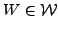

Next: Bibliography
Marko Huhtanen
APPROXIMATE FACTORS FOR THE INVERSE
Institute of Mathematics
Helsinki University of Technology
Box 1100
FIN-02015
Finland
marko.huhtanen@tkk.fi
Let
and
be sparse matrix subspaces
of
containing
invertible elements such that those
of
are readily invertible.
To precondition a large linear system involving
a sparse nonsingular matrix
,
in this talk we consider
with non-zero matrices
 and
 both regarded as variables.
The attainability of the possible equality
can be
verified by inspecting the nullspace of
both regarded as variables.
The attainability of the possible equality
can be
verified by inspecting the nullspace of
where is the orthogonal
projection onto
[1].
Corresponding to the smallest singular values of (![[*]](file:/usr/share/latex2html/icons/crossref.png) ),
we have
if and only if
.
This gives rise to the criterion
),
we have
if and only if
.
This gives rise to the criterion
for a starting point to generate approximate
factors  and
and  . Then
. Then
in the 2-norm,
whenever is invertible.
Consequently,
the maximum gap between these two approximation problems
is determined the condition number of .
In the special case
the equalities hold in general. This corresponds
to the criterion
which constitutes a starting point for constructing
sparse approximate inverses.
Next: Bibliography
Marian
2008-02-26